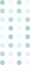

<ion-header mode="ios" class="dark">
    <div *ngIf="stepper === 1" routerLink="/intro" class="back-button">
        
    </div>
    <ion-title></ion-title>
</ion-header>

<ion-content [scrollEvents]="true" parallax-header>
    <div *ngIf="stepper===1" class="page-container">
        <div class="lead">
            <h2>
                Wish a Link’e hoş geldiniz
                lütfen giriş yapınız
                <div class="vertical-dots">
                    
                </div>
            </h2>
        </div>
        <div class="bottom-container pt-2">
            <div class="bottom-content pt-2">
                <form [formGroup]="loginForm" (ngSubmit)="login()" novalidate>
                    <ion-item>
                        <div class="p-inputgroup">
                            <button class="p-button" (click)="showCountrySelector()" type="button">
                                <i class="flag-icon flag-icon-{{selectedCountry.isoCode}}"></i>
                                <span>+{{selectedCountry.dialCode}}</span>
                            </button>
                            <input class="p-inputtext" formControlName="phoneNumberMasked" [mask]="selectedCountry.phoneMask"
                                placeholder="Telefon">
                        </div>
                    </ion-item>
                    <ion-item>
                        <input class="p-inputtext" formControlName="password" type="password" placeholder="Şifre">
                    </ion-item>
                    <ion-item>
                        <ion-button type="submit" [disabled]="isLoading || !loginForm.valid">{{ isLoading ? 'Giriş
                            yapılıyor...' : 'Giriş Yap' }}</ion-button>
                    </ion-item>
                    <ion-item>
                        <ion-button (click)="goForgot()" class="ion-text-capitalize" fill="clear" type="button" >Şifremi Unuttum</ion-button>
                    </ion-item>
                </form>
            </div>
        </div>
    </div>
</ion-content>